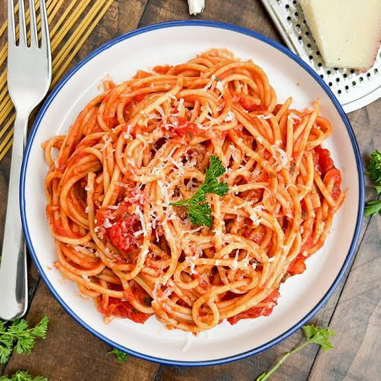

Spaghetti Recipe
Home

Description
This is a recipe showing you how to make a classic spaghetti dish.
Steps
- Fill a stock pot a little over half ways with water, season generously with sea salt and heat with a high heat
- At the same time, heat a large fry pan with a medium heat and add in the olive oil
- In the meantime, finely chop the shallot and roughly chop the garlic
- Once the olive oil is nice and hot, add in the chopped ingredients, mix continuously, after 3 to 4 minutes and the ingredients are ligthly sauteed, add in the hot smoked paprika, sweet smoked paprika and dried thyme, quickly mix together, then add in the canned tomato sauce, canned diced tomatoes, 2 tbsp chopped fresh parsley and season with sea salt & black pepper, mix together and then lower to a low-medium heat
- Move back to the stock pot, once the water comes to a boil, add in the spaghetti, mix every 2 to 3 minutes so the pasta doesn't stick together and it all evenly cooks
- Once the spaghetti is just cooked al dente (check pasta package instructions), using tons, transfer the spaghetti directly from the stock pot into the pan with the simmering sauce, it's ok if a little of that starchy water get's into the sauce, then turn off the heat and mix together until well mixed
- Transfer the pasta into serving dishes, then top each one off with some grated cheese and fresh parsley, serve at once, enjoy!